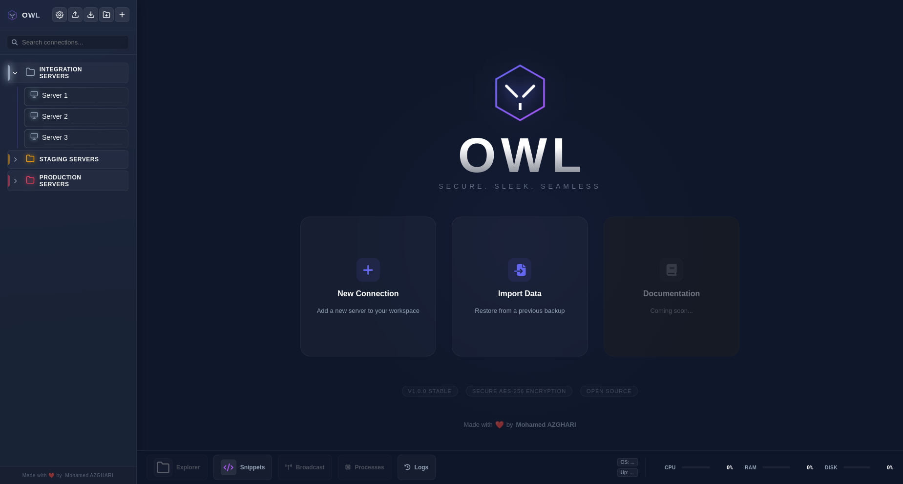

Secure. Sleek.
Seamless.
A high-performance connection manager for Linux. Secure, fast, and built for modern workflows.

Engineered for Excellence
Manage your remote servers from a single, unified interface.
Modern Interface
A clean, dark-themed UI with smooth transitions and optimized layouts.
Secure Storage
Local AES-256 encryption. Your credentials never leave your machine.
Terminal
Built on xterm.js with support for broadcast mode and bastion hosts.
File Manager
Integrated SFTP explorer with drag-and-drop support and directory insights.
Monitoring
Real-time tracking for CPU, RAM, and Disk usage on remote hosts.
Automation
Quickly access snippets and common commands via the command palette.
AES-256 Encryption
Secure by Design
OWL uses industry-standard AES-256-GCM encryption to protect your connection details. All data is stored locally on your machine.
- Local-only storage (No Cloud)
- Master Password Protection
- Session Auto-Lock